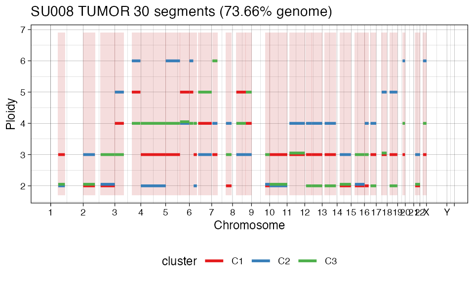

data("satpathy_bcc")Hyperparameters can be computed from data.
satpathy_bcc_hp = auto_config_run(
satpathy_bcc,
K = 1:3
)
#>
#> ── (R)CONGAS+ hyperparameters auto-config ──────────────────────────────────────
#>
#> ── ATAC modality ──
#>
#> → Negative Binomial likelihood, estimating Gamma shape and rate
#>
#> ── Estimating segment factors
#> → 1: chr1:57781319:108512982 theta_shape = 45.5149882749764, theta_rate = 0.0683547835637149
#> → 2: chr10:285200:135490954 theta_shape = 56.6252351111474, theta_rate = 0.0322258981079812
#> → 3: chr11:17515668:134898011 theta_shape = 68.5037496647061, theta_rate = 0.0578679209978652
#> → 4: chr12:53343461:133801333 theta_shape = 52.7620119071769, theta_rate = 0.0661547788290761
#> → 5: chr12:9659563:53295917 theta_shape = 28.5169745856317, theta_rate = 0.0793159013261372
#> → 6: chr13:19048353:105257369 theta_shape = 18.8173990204181, theta_rate = 0.0412411373636207
#> → 7: chr14:20323479:105411153 theta_shape = 51.4740565419227, theta_rate = 0.0415431844676566
#> → 8: chr15:28947721:102517302 theta_shape = 55.1580302367225, theta_rate = 0.042320780576049
#> → 9: chr16:2647876:32471773 theta_shape = 24.4315751519023, theta_rate = 0.062595809790352
#> → 10: chr16:46387488:90161852 theta_shape = 59.0897702513059, theta_rate = 0.106469500530974
#> → 11: chr17:41382596:79601279 theta_shape = 47.0026031138457, theta_rate = 0.0729076348679436
#> → 12: chr18:18917714:77990447 theta_shape = 41.4529872363116, theta_rate = 0.073765605780796
#> → 13: chr19:37387271:56260903 theta_shape = 32.9285517093921, theta_rate = 0.0508650509973884
#> → 14: chr2:133074851:241531737 theta_shape = 51.2712911263163, theta_rate = 0.0421156876572839
#> → 15: chr2:39340:89319834 theta_shape = 56.6735596510803, theta_rate = 0.0436840748098513
#> → 16: chr21:11186714:48117308 theta_shape = 64.1419828130584, theta_rate = 0.0691836153093573
#> → 17: chr22:24666835:51195591 theta_shape = 17.0187839825572, theta_rate = 0.0466290695693932
#> → 18: chr3:129807186:195300676 theta_shape = 52.3398753479607, theta_rate = 0.0837621138598831
#> → 19: chr3:210865:68802779 theta_shape = 58.5016670051219, theta_rate = 0.114352939242418
#> → 20: chr4:40332:190986668 theta_shape = 55.0135031507166, theta_rate = 0.0534562487010434
#> → 21: chr5:1037453:109501904 theta_shape = 19.7131968848215, theta_rate = 0.0508071355773477
#> → 22: chr5:110286431:180712485 theta_shape = 49.5924201465819, theta_rate = 0.117538467651264
#> → 23: chr6:142840:29844875 theta_shape = 54.2033778699618, theta_rate = 0.119753737286176
#> → 24: chr6:32604274:57301860 theta_shape = 65.1254534258658, theta_rate = 0.0951540503215217
#> → 25: chr6:67340783:171046023 theta_shape = 52.6120502808357, theta_rate = 0.099613540296381
#> → 26: chr7:109152563:151918337 theta_shape = 11.2921716608807, theta_rate = 0.028309803624194
#> → 27: chr7:4946973:43496138 theta_shape = 11.4340639137278, theta_rate = 0.0405177117206314
#> → 28: chr8:102060353:146295114 theta_shape = 54.1100937504099, theta_rate = 0.0992042307738974
#> → 29: chr8:28979547:101936664 theta_shape = 45.5998219207589, theta_rate = 0.0906266071318198
#> → 30: chr9:104571076:139341529 theta_shape = 50.9551304658732, theta_rate = 0.049325124185258
#>
#> ── RNA modality ──
#>
#> → Negative Binomial likelihood, estimating Gamma shape and rate
#>
#> ── Estimating segment factors
#> → 1: chr1:57781319:108512982 theta_shape = 6.55410383438334, theta_rate = 0.08105537884156
#> → 2: chr10:285200:135490954 theta_shape = 20.7820685419274, theta_rate = 0.218830962849156
#> → 3: chr11:17515668:134898011 theta_shape = 22.1844459126929, theta_rate = 0.252619905821196
#> → 4: chr12:53343461:133801333 theta_shape = 52.4811632782404, theta_rate = 0.768238574215243
#> → 5: chr12:9659563:53295917 theta_shape = 11.5420679807231, theta_rate = 0.173173027302321
#> → 6: chr13:19048353:105257369 theta_shape = 23.6467580966638, theta_rate = 0.590626685707765
#> → 7: chr14:20323479:105411153 theta_shape = 18.3862111497375, theta_rate = 0.207688914992828
#> → 8: chr15:28947721:102517302 theta_shape = 27.0038096624597, theta_rate = 0.42605217900661
#> → 9: chr16:2647876:32471773 theta_shape = 24.9195604052929, theta_rate = 1.15080995338642
#> → 10: chr16:46387488:90161852 theta_shape = 24.8436357588519, theta_rate = 1.16649005534798
#> → 11: chr17:41382596:79601279 theta_shape = 8.81711592112046, theta_rate = 0.0747554794715312
#> → 12: chr18:18917714:77990447 theta_shape = 6.76275211263952, theta_rate = 0.150772091841175
#> → 13: chr19:37387271:56260903 theta_shape = 8.03174405695244, theta_rate = 0.205733100647802
#> → 14: chr2:133074851:241531737 theta_shape = 30.8607404698738, theta_rate = 0.40505656364644
#> → 15: chr2:39340:89319834 theta_shape = 34.9811362999091, theta_rate = 0.481033307559697
#> → 16: chr21:11186714:48117308 theta_shape = 13.8774489754069, theta_rate = 0.310592645954173
#> → 17: chr22:24666835:51195591 theta_shape = 27.3065393186501, theta_rate = 1.70848260277878
#> → 18: chr3:129807186:195300676 theta_shape = 11.1097544932045, theta_rate = 0.29807214003571
#> → 19: chr3:210865:68802779 theta_shape = 26.8821725791947, theta_rate = 1.18321361954458
#> → 20: chr4:40332:190986668 theta_shape = 21.5895188550432, theta_rate = 0.473879490028952
#> → 21: chr5:1037453:109501904 theta_shape = 27.1608022678274, theta_rate = 1.47262202584839
#> → 22: chr5:110286431:180712485 theta_shape = 30.8059938614821, theta_rate = 1.25800036621278
#> → 23: chr6:142840:29844875 theta_shape = 11.7416437671697, theta_rate = 0.554573444840344
#> → 24: chr6:32604274:57301860 theta_shape = 11.4431849364123, theta_rate = 0.233525268060464
#> → 25: chr6:67340783:171046023 theta_shape = 31.1237506443695, theta_rate = 0.535126075131484
#> → 26: chr7:109152563:151918337 theta_shape = 11.7660676264707, theta_rate = 0.905508620424355
#> → 27: chr7:4946973:43496138 theta_shape = 9.1209780743886, theta_rate = 0.270158051618793
#> → 28: chr8:102060353:146295114 theta_shape = 10.8344660356343, theta_rate = 0.492789684364837
#> → 29: chr8:28979547:101936664 theta_shape = 9.62463654034445, theta_rate = 0.224868206368885
#> → 30: chr9:104571076:139341529 theta_shape = 26.9796781007339, theta_rate = 0.529534311965905Parameters are a list.
satpathy_bcc_hp
#> $probs
#> tensor([0.2000, 0.6000, 0.2000, 0.0500, 0.0250, 0.0250])
#>
#> $init_probs
#> [1] 0.6
#>
#> $theta_shape_atac
#> tensor([45.5150, 56.6252, 68.5037, 52.7620, 28.5170, 18.8174, 51.4741, 55.1580,
#> 24.4316, 59.0898, 47.0026, 41.4530, 32.9286, 51.2713, 56.6736, 64.1420,
#> 17.0188, 52.3399, 58.5017, 55.0135, 19.7132, 49.5924, 54.2034, 65.1255,
#> 52.6120, 11.2922, 11.4341, 54.1101, 45.5998, 50.9551])
#>
#> $theta_rate_atac
#> tensor([0.0684, 0.0322, 0.0579, 0.0662, 0.0793, 0.0412, 0.0415, 0.0423, 0.0626,
#> 0.1065, 0.0729, 0.0738, 0.0509, 0.0421, 0.0437, 0.0692, 0.0466, 0.0838,
#> 0.1144, 0.0535, 0.0508, 0.1175, 0.1198, 0.0952, 0.0996, 0.0283, 0.0405,
#> 0.0992, 0.0906, 0.0493])
#>
#> $nb_size_init_atac
#> tensor([150., 150., 150., 150., 150., 150., 150., 150., 150., 150., 150., 150.,
#> 150., 150., 150., 150., 150., 150., 150., 150., 150., 150., 150., 150.,
#> 150., 150., 150., 150., 150., 150.])
#>
#> $likelihood_atac
#> [1] "NB"
#>
#> $theta_shape_rna
#> tensor([ 6.5541, 20.7821, 22.1844, 52.4812, 11.5421, 23.6468, 18.3862, 27.0038,
#> 24.9196, 24.8436, 8.8171, 6.7628, 8.0317, 30.8607, 34.9811, 13.8774,
#> 27.3065, 11.1098, 26.8822, 21.5895, 27.1608, 30.8060, 11.7416, 11.4432,
#> 31.1238, 11.7661, 9.1210, 10.8345, 9.6246, 26.9797])
#>
#> $theta_rate_rna
#> tensor([0.0811, 0.2188, 0.2526, 0.7682, 0.1732, 0.5906, 0.2077, 0.4261, 1.1508,
#> 1.1665, 0.0748, 0.1508, 0.2057, 0.4051, 0.4810, 0.3106, 1.7085, 0.2981,
#> 1.1832, 0.4739, 1.4726, 1.2580, 0.5546, 0.2335, 0.5351, 0.9055, 0.2702,
#> 0.4928, 0.2249, 0.5295])
#>
#> $nb_size_init_rna
#> tensor([150., 150., 150., 150., 150., 150., 150., 150., 150., 150., 150., 150.,
#> 150., 150., 150., 150., 150., 150., 150., 150., 150., 150., 150., 150.,
#> 150., 150., 150., 150., 150., 150.])
#>
#> $likelihood_rna
#> [1] "NB"
#>
#> $lambda
#> [1] 0.3
#>
#> $hidden_dim
#> [1] 6
#>
#> $binom_prior_limits
#> [1] 15 1000Fitting uses reticulate to interface with the Python CONGAS package, which implements the models in Pyro.
# Run Python
satpathy_bcc = fit_congas(
satpathy_bcc,
K = 1:3,
model_parameters = satpathy_bcc_hp,
steps = 500
)
#>
#> ── Fit with k = 1.
#>
#> ── Fit with k = 2.
#>
#> ── Fit with k = 3.
#>
#> ── Inference completed, choosing best model.The new object has more information.
satpathy_bcc
#> ── [ (R)CONGAS+ ] SU008 TUMOR 30 segments (73.66% genome) ──────────────────────
#>
#> ── CNA segments (reference: GRCh38)
#> → Input 30 CNA segments, mean ploidy 3.2.
#>
#> | | | | | | | | | | | | | | | | | | | |
#>
#> Ploidy: 0 1 2 3 4 5 *
#>
#> ── Modalities
#> → RNA: 714 cells with 8613 mapped genes, 1401728 non-zero values. Likelihood: Negative Binomial.
#> → ATAC: 259 cells with 284316 mapped peaks, 3083691 non-zero values. Likelihood: Negative Binomial.
#>
#> ── Clusters: k = 3, model with ICL = 290656.79.
#>
#> C1 | | | | | | | | | | | | | | | | | | | |
#> C2 | | | | | | | | | | | | | | | | | | | |
#> C3 | | | | | | | | | | | | | | | | | | | |
#>
#> RNA
#> C3 : ■■■■■■■■■■■■■■■■■■■■■■■■■ n = 714
#> ATAC
#> C3 : ■■■■■■■■■■■■■■■■■■■■■■■■■ n = 259
#>
#> ── LOG ──
#>
#> - 2021-03-30 17:58:41 Created input object.
#> - 2021-03-30 17:58:43 Filtered outliers: [6|0.05|0.95]
satpathy_bcc %>%
plot()
#> Warning: Removed 24 rows containing missing values (geom_rect).
#> Warning: Removed 24 rows containing missing values (geom_segment).